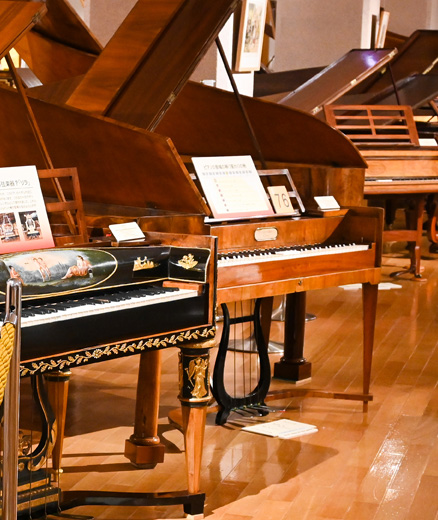
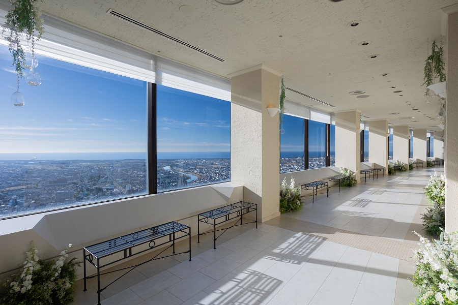

午前
09:30 · 体験
楽器博物館1階 第1展示室
アジアと日本の音を比べる
10:50 · 体験
楽器博物館地下1階 第2・3展示室
鍵盤楽器と各地域の楽器を観察
午前は楽器の比較と演奏体験、午後は45階の音楽史展示と眺望へ。昼食・カフェ・夕食と15〜20分の休憩5回を分けた計画です。
取得：2026/11/19 13:26:47 JST · 42件の引用
09:00〜20:00、掲載額2人17600円。地図は引用した施設代表点で、道路経路や入口ではありません。上下階は同一代表点。アクトの森・城公園は未採用。
操作可能な地図・ロードマップを読み込み中。JavaScriptが無効な場合も下の回答全文を読めます。
算出できた徒歩区間の距離見積 1.1km · 徒歩本体 32分 · 未算出の徒歩区間 0件。道路距離・当日の所要時間を確認した値ではありません。
体験 230分 · 食事・カフェ 225分 · 休憩 80分 · 移動 125分 · 待ち 0分
参照できる同条件の実績はありません。初期の歩速・迂回係数・滞在時間を使った見積で、過去の生成案を実績に数えていません。
| 移動区間 | 距離と時間 | 見積の根拠 |
|---|---|---|
| 浜松駅 → オークラアクトシティホテル浜松 徒歩 | 推定 0.36km 直線 0.28km 確保 15分（待ち・乗降・余裕を含む） | 引用座標の直線距離×仮の迂回係数と歩速。道路距離は未確認 |
| オークラアクトシティホテル浜松 → 浜松市楽器博物館 徒歩 | 推定 0.19km 直線 0.14km 確保 15分（待ち・乗降・余裕を含む） | 引用座標の直線距離×仮の迂回係数と歩速。道路距離は未確認 |
| 浜松市楽器博物館 → 浜松市楽器博物館 館内 | 距離未算出 直線 0.00km 確保 10分（待ち・乗降・余裕を含む） | 館内・上下移動の初期見積。エレベーター待ち等は別内訳 |
| 浜松市楽器博物館 → 浜松市楽器博物館 館内 | 距離未算出 直線 0.00km 確保 10分（待ち・乗降・余裕を含む） | 館内・上下移動の初期見積。エレベーター待ち等は別内訳 |
| 浜松市楽器博物館 → オークラアクトシティホテル浜松 徒歩 | 推定 0.19km 直線 0.14km 確保 15分（待ち・乗降・余裕を含む） | 引用座標の直線距離×仮の迂回係数と歩速。道路距離は未確認 |
| オークラアクトシティホテル浜松 → オークラアクトシティホテル浜松 館内 | 距離未算出 直線 0.00km 確保 20分（待ち・乗降・余裕を含む） | 館内・上下移動の初期見積。エレベーター待ち等は別内訳 |
| オークラアクトシティホテル浜松 → オークラアクトシティホテル浜松 館内 | 距離未算出 直線 0.00km 確保 20分（待ち・乗降・余裕を含む） | 館内・上下移動の初期見積。エレベーター待ち等は別内訳 |
| オークラアクトシティホテル浜松 → 浜松駅 徒歩 | 推定 0.36km 直線 0.28km 確保 20分（待ち・乗降・余裕を含む） | 引用座標の直線距離×仮の迂回係数と歩速。道路距離は未確認 |
| 滞在 | 正味の体験時間 | 参考時間と根拠 |
|---|---|---|
| 浜松市楽器博物館 | 150分 | 参考 90〜150分 カテゴリ別の初期計画仮定。過去の実測ではない |
| 浜松市楽器博物館 | 15分 | 参考 15〜30分 カテゴリ別の初期計画仮定。過去の実測ではない |
| 浜松市楽器博物館 | 15分 | 参考 15〜30分 カテゴリ別の初期計画仮定。過去の実測ではない |
| オークラアクトシティホテル浜松 | 65分 | 参考 60〜90分 カテゴリ別の初期計画仮定。過去の実測ではない |
| オークラアクトシティホテル浜松 | 15分 | 参考 15〜30分 カテゴリ別の初期計画仮定。過去の実測ではない |
| オークラアクトシティホテル浜松 | 45分 | 参考 45〜75分 カテゴリ別の初期計画仮定。過去の実測ではない |
| オークラアクトシティホテル浜松 | 80分 | 参考 35〜60分 カテゴリ別の初期計画仮定。過去の実測ではない |
| オークラアクトシティホテル浜松 | 20分 | 参考 15〜30分 カテゴリ別の初期計画仮定。過去の実測ではない |
| オークラアクトシティホテル浜松 | 85分 | 参考 60〜90分 カテゴリ別の初期計画仮定。過去の実測ではない |
| オークラアクトシティホテル浜松 | 30分 | 参考 45〜75分 カテゴリ別の初期計画仮定。過去の実測ではない |
| オークラアクトシティホテル浜松 | 15分 | 参考 15〜30分 カテゴリ別の初期計画仮定。過去の実測ではない |
参照できる同条件・期限内の実績はありません。過去に生成した計画を実績として学習していません
採用した休憩 5手順 · 場所の引用・利用時間の検査 5件通過 · 未確認 0件。
公開案内と宣言した検査の照合結果です。当日の空席・継続着席・臨時規制は別途確認してください。不採用候補には未確認が2項目残っています。採用した休憩の未確認と分けて表示しています。
| 時刻・場所 | 引用の利用時間 | 場所の引用 |
|---|---|---|
| 10:25 · 楽器博物館1階 展示室内の小型椅子 | 09:30〜17:00 | 場所の引用・利用時間を照合 |
| 11:50 · 楽器博物館1階 展示室内の小型椅子 | 09:30〜17:00 | 場所の引用・利用時間を照合 |
| 14:10 · ザ・シーズンカフェ＆ラウンジ（カフェ）2階 客席 | 11:00〜17:00 | 場所の引用・利用時間を照合 |
| 17:10 · ザ・シーズンカフェ＆ラウンジ（ラウンジ）2階 客席 | 17:00〜22:30 | 場所の引用・利用時間を照合 |
| 19:25 · ザ・シーズンカフェ＆ラウンジ（ラウンジ）2階 客席 | 17:00〜22:30 | 場所の引用・利用時間を照合 |
各休憩に具体的な場所のfact検査とopening検査を付ける。公園の24時間開放は同一公園の明示引用がある場合だけaccess:always-openを使い、座れることや建物の開館には流用しない。
verify_stepsで本文と同一対象リンクを調べ直す。公開情報がなければ同じ地域の確認できる場所へ変更し、時間・移動距離・価格・写真を再検査する。古い回答や学習観点を今回の根拠にしない。当日の空席や臨時規制の確約はしない。
read_journey_stateで区間のつながり・ペース・疲労・休憩を確認し、時刻と予算を再配分する。過去の生成案と本人の実績は分ける。長い待機で一日を埋めない。
実際の施設写真と引用地点の地図、午前・午後・夜の具体的な楽しみ方を用意する。観点を参照しただけで人間の魅力度評価に合格したとは扱わない。
必須の訪問先・比較先は保持する。任意候補を取得不能で不採用としたら理由をlimitationsに残し、主案や必須比較に使わない対象を最終candidatesや必須criteriaへ無条件で含めない。今回の根拠を得た採用先については住所・営業・価格・体験を必須検査し、未確認のものをsupportedへ変更しない。既存改善タスクのcriteriaは変更しない。
公式の料金ラベルと金額・対象者・通常料金と団体料金を読み分ける。引用があるのに検査で不足となる場合は検出器の原因を記録する。検査を迂回したり未取得の価格を作らない。
観点と検査結果を保存し、次回の生成で参照します。営業時間はその都度調べ直します。魅力が伝わるかは、人が見て確かめる観点として残します。
09:00 → 20:00 · ゆっくり、余白を大切に。
時間帯ごとの主な楽しみ方。移動・待ち時間・休憩は、この下の全行程で確認できます。
09:30 · 体験
楽器博物館1階 第1展示室
アジアと日本の音を比べる
10:50 · 体験
楽器博物館地下1階 第2・3展示室
鍵盤楽器と各地域の楽器を観察
12:05 · 体験
楽器博物館1階 第4展示室・体験ルーム
自分で音を出し、国産楽器を知る
13:05 · 昼食
ザ・シーズンカフェ＆ラウンジ（カフェ）2階
ドリアの昼食
14:25 · カフェ
ザ・シーズンカフェ＆ラウンジ（カフェ）2階
プリンとコーヒーを味わう
15:30 · 体験
展望回廊45階 北側・南側
まちと音楽のつながりを読む
17:30 · 夕食
ザ・シーズンカフェ＆ラウンジ（ラウンジ）2階
五目あんかけ焼きそばで夕食
18:55 · カフェ
ザ・シーズンカフェ＆ラウンジ（ラウンジ）2階
コーヒーで一日を振り返る
施設と引用の対応、掲載された営業時間の数値枠を照合します。曜日・臨時休業の意味解釈や当日の提供を保証する検査ではありません。
移動時間は提案の見積。道路経路・当日の交通状況を確認済みにはしません
移動時間は提案の見積。道路経路・当日の交通状況を確認済みにはしません
予定が引用にある09:30〜17:00の数値枠に収まります。曜日・提供枠・臨時変更の意味解釈は別途必要です
楽器博物館 大人：2×掲載単価800円。合算と引用内数値は共通の予算検査で照合します
予定が引用にある09:30〜17:00の数値枠に収まります。曜日・提供枠・臨時変更の意味解釈は別途必要です
指定した語句が同施設の引用内にあります。意味全体の含意を証明する判定ではありません
移動時間は提案の見積。道路経路・当日の交通状況を確認済みにはしません
予定が引用にある09:30〜17:00の数値枠に収まります。曜日・提供枠・臨時変更の意味解釈は別途必要です
移動時間は提案の見積。道路経路・当日の交通状況を確認済みにはしません
予定が引用にある09:30〜17:00の数値枠に収まります。曜日・提供枠・臨時変更の意味解釈は別途必要です
指定した語句が同施設の引用内にあります。意味全体の含意を証明する判定ではありません
予定が引用にある09:30〜17:00の数値枠に収まります。曜日・提供枠・臨時変更の意味解釈は別途必要です
移動時間は提案の見積。道路経路・当日の交通状況を確認済みにはしません
予定が引用にある11:00〜17:00の数値枠に収まります。曜日・提供枠・臨時変更の意味解釈は別途必要です
ドリア（付属品込み）：2×掲載単価1800円。合算と引用内数値は共通の予算検査で照合します
席・提供・当日の受付は現地判断。予約完了や空席確約として扱いません
予定が引用にある11:00〜17:00の数値枠に収まります。曜日・提供枠・臨時変更の意味解釈は別途必要です
指定した語句が同施設の引用内にあります。意味全体の含意を証明する判定ではありません
ドリア（付属品込み）：2×掲載単価1800円。合算と引用内数値は共通の予算検査で照合します
予定が引用にある11:00〜17:00の数値枠に収まります。曜日・提供枠・臨時変更の意味解釈は別途必要です
プリン：2×掲載単価600円。合算と引用内数値は共通の予算検査で照合します
午後の単品ブレンド：2×掲載単価850円。合算と引用内数値は共通の予算検査で照合します
席・提供・当日の受付は現地判断。予約完了や空席確約として扱いません
移動時間は提案の見積。道路経路・当日の交通状況を確認済みにはしません
予定が引用にある11:00〜18:00の数値枠に収まります。曜日・提供枠・臨時変更の意味解釈は別途必要です
展望回廊 一般大人：2×掲載単価1200円。合算と引用内数値は共通の予算検査で照合します
移動時間は提案の見積。道路経路・当日の交通状況を確認済みにはしません
予定が引用にある17:00〜22:30の数値枠に収まります。曜日・提供枠・臨時変更の意味解釈は別途必要です
指定した語句が同施設の引用内にあります。意味全体の含意を証明する判定ではありません
アップルジュース：2×掲載単価700円。合算と引用内数値は共通の予算検査で照合します
予定が引用にある17:00〜22:30の数値枠に収まります。曜日・提供枠・臨時変更の意味解釈は別途必要です
五目あんかけ焼きそば：2×掲載単価2000円。合算と引用内数値は共通の予算検査で照合します
席・提供・当日の受付は現地判断。予約完了や空席確約として扱いません
予定が引用にある17:00〜22:30の数値枠に収まります。曜日・提供枠・臨時変更の意味解釈は別途必要です
夜のブレンドコーヒー：2×掲載単価850円。合算と引用内数値は共通の予算検査で照合します
席・提供・当日の受付は現地判断。予約完了や空席確約として扱いません
予定が引用にある17:00〜22:30の数値枠に収まります。曜日・提供枠・臨時変更の意味解釈は別途必要です
指定した語句が同施設の引用内にあります。意味全体の含意を証明する判定ではありません
夜のブレンドコーヒー：2×掲載単価850円。合算と引用内数値は共通の予算検査で照合します
移動時間は提案の見積。道路経路・当日の交通状況を確認済みにはしません
時刻・移動時間・楽しみ方は提案です。所在地と営業予定は、下の確認項目と出典で確かめられます。

01 02
022階で昼食・独立休息・午後の注文を分ける。夜は同店ラウンジ営業へ。

03心地よいペースで、次の場面へ。
主案の全手順です。時刻・所要時間・楽しみ方は提案。地図の省略操作では、この主案を変更しません。楽しみ方の提案二人で弦・管・打の各1点を選び、形と素材から音を予想してから音源を聞く。各自お気に入り1点をメモ。
二人で弦・管・打の各1点を選び、形と素材から音を予想してから音源を聞く。各自お気に入り1点をメモ。
楽しみ方の提案プリン600円＋単品ブレンド850円を各1＝2900円。昼食のコーヒーとは別の午後注文。硬さ・香りを比べ、午前のお気に入り楽器を一つずつ語る。満席・席継続不可なら下記分岐へ。
プリン600円＋単品ブレンド850円を各1＝2900円。昼食のコーヒーとは別の午後注文。硬さ・香りを比べ、午前のお気に入り楽器を一つずつ語る。満席・席継続不可なら下記分岐へ。
掲載写真・体験へ ↗地図で場所を確認 ↗楽しみ方の提案北側の史跡・窓下パネルから6枚を選び午前の楽器と関連づける40分、南北の街を見比べ20分、写真3枚と短いキャプション20分。南側制限時は北側中心に切替。
北側の史跡・窓下パネルから6枚を選び午前の楽器と関連づける40分、南北の街を見比べ20分、写真3枚と短いキャプション20分。南側制限時は北側中心に切替。
楽しみ方の提案中国料理提供17:30以降に五目あんかけ焼きそば2000円を各1。先のジュースは再加算しない。食後に午前と午後で印象が変わった発見を話す。20時提供開始の新フードは注文しない。
中国料理提供17:30以降に五目あんかけ焼きそば2000円を各1。先のジュースは再加算しない。食後に午前と午後で印象が変わった発見を話す。20時提供開始の新フードは注文しない。
予定通りより、気持ちよく帰れる一日を。疲れたら「未確認・変更時の行動」の代替案へ。
対象日 2026-11-19。公開された予定・掲載価格・利用条件を確認した行程です。予約や未来の空席を確約するものではありません。
通常営業枠を全採用施設へ適用、対象日の未来営業保証ではない
09:30の手順 ↗ · 10:25の手順 ↗ · 10:40の手順 ↗ · 10:50の手順 ↗ · 11:40の手順 ↗ · 11:50の手順 ↗ · 12:05の手順 ↗ · 13:05の手順 ↗ · 14:10の手順 ↗ · 14:25の手順 ↗ · 15:10の手順 ↗ · 15:30の手順 ↗ · 16:50の手順 ↗ · 17:10の手順 ↗ · 17:30の手順 ↗ · 18:55の手順 ↗ · 19:25の手順 ↗
2人17600円。ドリア付属コーヒーを重複計上せず、午後と夜の飲物だけ別注文。
09:30の手順 ↗ · 13:05の手順 ↗ · 14:25の手順 ↗ · 15:30の手順 ↗ · 17:10の手順 ↗ · 17:30の手順 ↗ · 18:55の手順 ↗
カフェ28席・ラウンジ48席。予約実行なし。入店時に継続着席・席利用を確認、満席なら観光を減らし帰路へ。入館は券売機、未来空席は未確認。
13:05の手順 ↗ · 14:10の手順 ↗ · 14:25の手順 ↗ · 17:10の手順 ↗ · 17:30の手順 ↗ · 18:55の手順 ↗ · 19:25の手順 ↗
浜松城は観光協会通常8:30〜16:30・大人200円。公園は24時間開放だが時計台広場ベンチ公式設置記事取得不能で未採用。アクトの森は無料6〜19時だが座標未取得のため不採用。
小型椅子とカフェ・ラウンジ客席で各15〜20分。観察・待機・飲食時間とは別計上。
10:25の手順 ↗ · 11:50の手順 ↗ · 14:10の手順 ↗ · 17:10の手順 ↗ · 19:25の手順 ↗
施設・店舗ごとの役割に応じた条件を確認しています。人気や満足度の順位ではありません。
| 施設・店舗 | 確認した条件と出典 |
|---|---|
| 浜松市楽器博物館（採用）対象条件を確認 | 確認 中央区中央3-9-1 ev-3 確認 通常9:30〜17:00。11/21にイベント掲載あり。将来の変更は未確約 ev-2ev-29 確認 大人個人800円×2=1600円 ev-1 |
| 展望回廊（採用）対象条件を確認 | 確認 ホテル45階、中央区板屋町111-2 ev-41 確認 通常11〜18時・17:30最終入場、15:30訪問。対象日のカレンダーは取得できず営業確約ではない ev-7 確認 一般料金 大人￥1,200×2=2400円。団体割引を適用しない ev-8 確認 音楽の都の歩みの展示と眺望を組み合わせる ev-9 |
| ザ・シーズンカフェ＆ラウンジ（昼カフェ・夜ラウンジを1候補に統合、採用）対象条件を確認 | 確認 ホテル2階、中央区板屋町111-2 ev-5ev-6ev-40 確認 土曜カフェ11〜17時LO16:30、夜ラウンジ17〜22:30。夕食の中国料理は17:30以降 ev-4ev-10ev-11 確認 ドリア1800円、プリン600円、ブレンド850円、五目焼きそば2000円、アップルジュース700円。税サ込 ev-12ev-14ev-15ev-16ev-22ev-23ev-24 |
| 浜松城（必須比較・主案には不採用）対象条件を確認 | 確認 元城町100-2。市案内で住所確認 ev-17 確認 観光協会の通常案内8:30〜16:30最終入場16:20。運営者の当日情報は取得不能。主案の楽器・眺望体験と両立させる追加歩行を避け不採用 ev-25 確認 観光協会の掲載は大人200円。運営者当日料金の確約ではない ev-26 確認 甲冑複製・合戦映像・城下町ジオラマ。展示内容は確認、今回は移動と休憩制約で見送る ev-27 |
| 浜松城公園（公開条件比較のみ・主案不採用）未解消の条件あり | 確認 元城町100-2 ev-19 確認 MICE案内で公園24時間開放を確認。駐車場8〜21:30とは別。当日イベント規制は未確認 ev-18 未確認 公園散策自体の無料条件の明記は今回の取得本文では未確認 未確認 時計台広場ベンチの設置記事と年月を取得できないため休憩地として採用しない |
主案：大人2人、入館2施設・昼食・午後カフェ・夕食と夜の飲物。交通費別、割引・土産なし
| 内訳 | 数量 × 単価 | 小計 | 区分 |
|---|---|---|---|
| 楽器博物館 大人 | 2 × 800円 | 1,600円 | 掲載額 |
| 展望回廊 一般大人 | 2 × 1,200円 | 2,400円 | 掲載額 |
| ドリア（付属品込み） | 2 × 1,800円 | 3,600円 | 掲載額 |
| アップルジュース | 2 × 700円 | 1,400円 | 掲載額 |
| 五目あんかけ焼きそば | 2 × 2,000円 | 4,000円 | 掲載額 |
| 夜のブレンドコーヒー | 2 × 850円 | 1,700円 | 掲載額 |
| プリン | 2 × 600円 | 1,200円 | 掲載額 |
| 午後の単品ブレンド | 2 × 850円 | 1,700円 | 掲載額 |
| 合計 | 17,600円 | ||
掲載額 17,600円で組んだ主案です。注文前に店頭の表示価格と総額をご確認ください。
追加の屋外訪問はしない。北側も休業なら入館を中止しカフェを16:30L.O.まで利用、無理に20時まで引き延ばさず帰る。
着席できなければ延長待機しない。昼食が取れない場合はこの主案の食費を実行しない。店頭で2人残予算以内の食事を選び直す必要があり、未調査の代替店名・価格は確約せず、20時完遂より早い帰路を優先。
保存された本文を表示しています。構造化手順・予算・分岐の表示部分はruntimeが追記したものです。
午前は楽器の比較と演奏体験、午後は45階の音楽史展示と眺望へ。昼食・カフェ・夕食と15〜20分の休憩5回を分けた計画です。ev-30ev-31ev-9ev-12ev-14ev-15ev-22
当日の営業・席は未確約です。城公園は24時間開放を確認できましたが具体的ベンチ設置記事は取得不能、アクトの森は徒歩端点座標未取得のため見送り、館内の椅子・客席で休みます。ev-18ev-21ev-28ev-36ev-37
| 内訳 | 人数・数量 | 単価 | 小計 | 区分 |
|---|---|---|---|---|
| 楽器博物館 大人 | 2 | 800円 | 1,600円 | 掲載額ev-1 |
| 展望回廊 一般大人 | 2 | 1,200円 | 2,400円 | 掲載額ev-8 |
| ドリア（付属品込み） | 2 | 1,800円 | 3,600円 | 掲載額ev-12ev-16 |
| アップルジュース | 2 | 700円 | 1,400円 | 掲載額ev-23ev-24 |
| 五目あんかけ焼きそば | 2 | 2,000円 | 4,000円 | 掲載額ev-22ev-24 |
| 夜のブレンドコーヒー | 2 | 850円 | 1,700円 | 掲載額ev-38ev-24 |
| プリン | 2 | 600円 | 1,200円 | 掲載額ev-15ev-16 |
| 午後の単品ブレンド | 2 | 850円 | 1,700円 | 掲載額ev-14ev-16 |
合計17,600円。指定上限20,000円との差額2,400円。見積を含み、実際の支払額を保証しません。
項目を開くと、取得した本文の引用と掲載元を確認できます。
個人
800円
400円
無料
無料
開館時間
9:30～17:00
〒430-7790 浜松市中央区中央3-9-1
土・日・祝 11：00～17：00
（L.O 16：30）
ロビーを見おろすホテル2階にあるカフェレストラン。
〒430-7733静岡県浜松市中央区板屋町111-2
11:00 〜 18:00（最終入場17：30）
一般料金
大人（中学生以上）￥1,200
こちらの展示では楽器製造のまちから音楽の都・浜松に至る軌跡をご紹介いたします。
カクテルタイム 17：00～22：30（ラストオーダー22：00）
定休日
月曜日
・中国料理メニュー：17:30～21:30
茄子とチキンのミートソースドリア
（サラダ・日替わりスープ、コーヒー付）
1,800円
お食事（11：00～14：00 L.O.）
ブレンドコーヒー（ホット・アイス）
各850円
プリン
600円
※表示価格はサービス料・消費税を含む金額です（テイクアウトは消費税のみ）。
〒430-0946 浜松市中央区元城町100-2
公園は24時間開放
〒430-0946 浜松市中央区元城町100-2MAP
ドリンクをテイクアウトして、屋上公園のベンチへ。
屋外広場は無料でご利用いただけます。（6:00～19:00）
五目あんかけ焼きそば
2,000円
アップルジュース
700円
※表示価格はすべて消費税・サービス料を含む金額です。
営業時間（浜松城）：8:30～16:30（最終入場は10分前まで）
大人（高校生以上）200円
館内には、徳川家康ゆかりの甲冑や具足の複製、合戦の様子を再現した映像、浜松城と城下町の変遷を表したジオラマなどが展示されています。
持ち運び可能な小型椅子を用意しています。
2026年11月21日 (4件のイベント)
11:00 AM: 篳篥[Hichiriki]
第4展示室には特別展スペースと自由に楽器や音具が演奏できる体験ルームがあります。
展示室は第1展示室(1F872ｍ2)、第2展示室(BF 738ｍ2)、第3展示室(BF 550ｍ2)、第4展示室(1F 657ｍ2)の4つです。
"lat":"34.7052750","lon":"137.7342440","category":"highway","type":"bus_stop","place_rank":30,"importance":6.606622415498615e-05,"addresstype":"highway","name":"浜松駅"
"lat":"34.7066154","lon":"137.7382244","category":"tourism","type":"museum","place_rank":30,"importance":0.07194870560319186,"addresstype":"tourism","name":"浜松市楽器博物館"
"lat":"34.7056106","lon":"137.7372416","category":"tourism","type":"hotel","place_rank":30,"importance":0.1570394422394589,"addresstype":"tourism","name":"オークラアクトシティホテル浜松"
"lat":"34.7117306","lon":"137.7249641","category":"historic","type":"castle","place_rank":30,"importance":0.4486184215818616,"addresstype":"historic","name":"浜松城"
席数
28席
席数
48席
ブレンドコーヒー（ホット・アイス）
各 850円
ザ・シーズンカフェ＆ラウンジ（ラウンジ）
お食事前のアペリティフ、食後の団らん、そして大・中ホールでのコンサートの前後にもおくつろぎいただけ、おしゃれなカクテルラウンジとしてもご利用いただけます。
〒430-7733静岡県浜松市中央区板屋町111-2
〒430-7733静岡県浜松市中央区板屋町111-2
Aberto
9:30～17:00